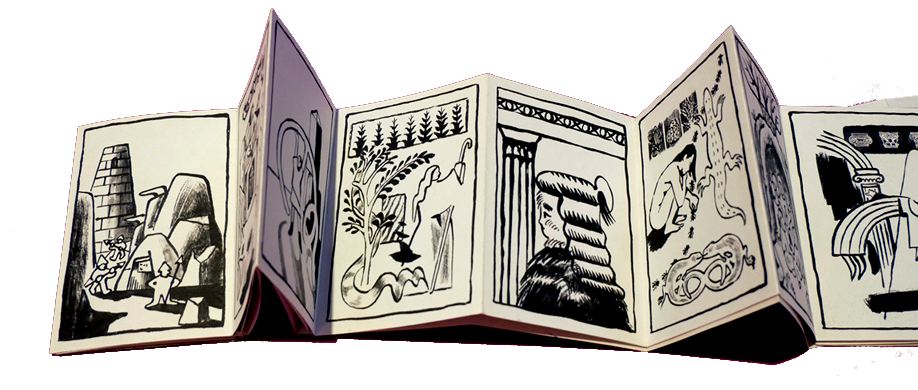
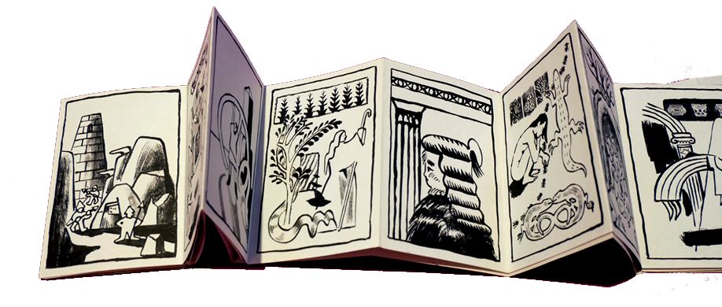

Illustration - Chapelet


 



Triple leporello collectif - 30 pages
Réalisé avec Albianyears et Bétadine Bergère et imprimé à la Poussinière en 2025.
"C'est un petit format qui peut se feuilleter ou se déplier (2,50 mètres de contemplation).
Les illustrations se succèdent comme des visions furtives. Des iconographies revisitées côtoient l'étrangeté d'un couvent décati dans une histoire qui sans fin s'égraine...
Le projet est parti de l'idée de répétition, de prière, de série. À travers ces illustrations énigmatiques se dessine une ambiance faite de secrets d'alcôves et de vies oubliées."
← Retour aux projets
← Retour à la galerie